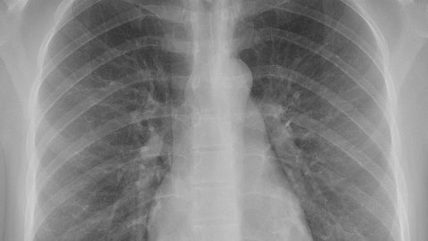
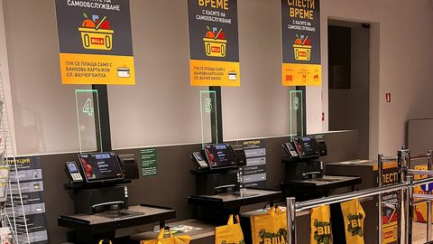
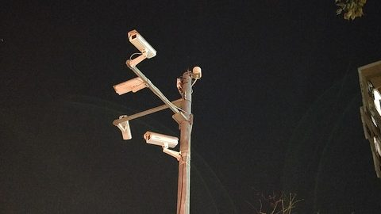
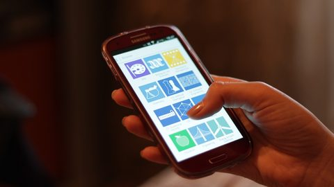
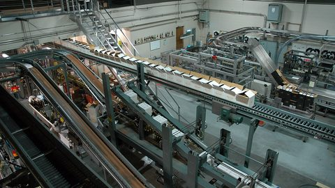

What does a computer actually see — and why is that hard?
By the end of this partExplain why an image is an array of numbers — and why that makes vision hard.
What a computer sees
A computer sees numbers, not objects
what you see
tap or hover a pixel
imageภาพa grid of numbers — here 12 × 12 = 144 pixels
pixelพิกเซลone number: 0 = black … 255 = white
Try itWhat is the value at row 5, column 5? Is that pixel dark or bright?
Answer30 — near 0, so dark: the diagonal of the “N”.
Here row 0, column 0 is the top-left pixel, as in NumPy and OpenCV. Tools differ: MATLAB counts from 1, OpenCV and PIL take points as (x, y) = (column, row), and a plot’s y-axis points up.
Applications
Vision is already everywhere
DrivingLanes, cars and pedestrians from on-board cameras

MedicineOutline organs and lesions for a doctor to check

RetailCount and follow shoppers; checkout without a cashier

Traffic safetySpot risky events in roadside video

PhonesPortrait blur, face unlock, AR filters
Farms & satellitesCrop health and land use seen from above
DocumentsRead text from photos and scans (OCR)

FactoriesFind defects on a production line
Every one of these starts from the same thing: a grid of numbers.
Why vision is hard
Same “N”, new light — every number changes
shaded = what the rule calls ink
Normal light → now
Background · row 0, col 0
220 →220
Stroke · row 5, col 5
30 →30
A fixed rule
“value below 100 = ink”
You still read “N” at every light level — the numbers, and any fixed rule on them, do not. Viewpoint, size and objects in front do the same. That is why a program has to be taught to see.
A little history
In 1966, vision was planned as a summer project
“The summer vision project is an attempt to use our summer workers effectively in the construction of a significant part of a visual system.”
— Seymour Papert, MIT, 1966
The plan: three steps, one summer
1 · Find the objectsSplit the picture into objects and background
→
2 · Describe themThe shape and surface of each one
→
3 · Name themMatch each one to objects it already knows
Start easy: balls, bricks and cylinders on a plain background.
What happenedIt took far longer than one summer. Sixty years on, those three steps are still what computer vision works on — and what this course teaches.
01Convolution → CNNThe filters you design by hand in session 3 are what a CNN learns by itself in session 4.
02Your project needs itAfter CNNs, ViT and CLIP in session 5, you start looking for a project topic — three weeks before it is due.
03Geometry is mathsMeasuring depth from two cameras or stitching a panorama uses fixed formulas — no training. After learning, you can tell when a formula beats a model.
Course outcomes
By the end of the course you can
Explain how an image is formed and what information is lost
Compute the core operations by hand — convolution, CNN shapes, attention scores, corners, transforms, depth, IoU, optical flow
Use pretrained models (CNN, ViT, CLIP, YOLO, SAM) and explain what each one does
Relate two images through features and geometry
Evaluate a vision system with the right metric — and name its risks
Design and compare two or three solutions to a real problem
Session format
Every session: one question, four parts, one notebook
QuestionThe problem the whole session solves
→
Part openerEach part A–D starts with its own question
→
Ideas & demosPictures and sliders first, formula second
→
Try itA hand calculation in the style of the final
→
Part summaryPlus more questions in the practice bank
When an idea from an earlier session comes back, a flashback points to where you first met it.
Open lab in Colab · part A
One lab.ipynb per session, one section per part — the button at the end of a part opens it there. Runs on free Colab.
In any deck, Shift + ← / → jumps to the previous or next part.
How is the grade split — and how do the weekly presentations work?
By the end of this partExplain how each part of your grade is earned, and how the weekly presentations work.
Assessment
Your grade: 100 points, four parts
Final40Week 15 · sessions 2–9 · hand calculation + concepts
Project30Proposal + demo
Assignment204 presentations
Part.10Questions + activities
No midterm. No bonus points. Every criterion of the assignment, the project and participation is marked on the same grading scale:
100%Excellent
75%Good
50%Satisfactory
25%Needs work
0%Missing
Grades: A ≥ 80 · C ≥ 60 · F < 50 · others by score groups · final & project need 80%+ handed in (all 4)
Assignment
Half the class presents every week
Half A
Topic sets T2 · T4 · T6 · T8
S3S4S5S6S7S8S9W10
Half B
Topic sets T3 · T5 · T7 · T9
S3S4S5S6S7S8S9W10
4 timesGroups of 1–3 · the speaker rotates every time
Topic set TnBuilds on session n · handed out at its end, presented one week later
Send first10+ slides and an 8+ minute video, by the deadline
No make-upA missed turn costs 5 points
Assignment
Five criteria for every presentation
Right length & engaging — 10+ slides, 8+ minutes, at least one picture, no slide over ~6 lines
Interesting answers — you answer questions from the class and the instructor well
Fluent — you explain; you do not read the slides aloud, in the video or live
Polished slides — pictures, equations, examples, little text, a clear flow, page numbers on every slide, and a title slide with names, student IDs and topic
On time — video and slides by the deadline (timestamp)
Each criterion is marked on the grading scale. Criteria 2, 3 and 5 are why copying an AI answer does not work.
Assignment · first turns
Half A presents next week, half B the week after
Session 2At its end, half A takes a topic from set T2
→
Session 3Half A presents T2. Half B takes a topic from set T3
→
Session 4Half B presents T3. Half A takes set T4
→
… until week 10After session 9, half B gives the last round (T9). Four turns for every group
One topic per groupNo two groups in the same half pick the same topic
7–8 topics per setMore topics than presenting groups — you always have a choice
Starting sourcesEvery topic lists a chapter, video or paper to begin with
Not in the finalTopics go beyond the lectures on purpose
What do you build, what is the exam — and when is everything due?
By the end of this partPlan the term — project milestones, hand-in rules and the final — and join a group and a half, A or B.
Project · 30 points · every criterion on the grading scale
Two or three ways to solve one real problem
Week 5Topic search starts
Week 8Topic chosen
Week 10Pitch + clinic
Week 11Proposal
Weeks 12–13Build and test
Week 14Demo
Week 15Final exam
Week 10 · short problem pitch — a few minutes per group, then again in the proposal: Input what goes inOutput what comes outProblem what must be solvedChallenge what makes it hard
Proposal · week 11 · video + slides
Problem pitch, refined — input, output, problem and challenge, updated after week 10
Data — where the dataset comes from and how it was collected
4 techniques — each explained in depth: theory, why it fits here, one example picture
Parameter study — every parameter, and how changing it changes the output
2–3 solutions — workflow, pros and cons of each
Creativity — an original idea, or a strong literature review
Slides — 30+ pages, page numbers, at least one picture, no page over 6 lines
Slide design — clear pictures and charts, consistent layout, a story that flows
Talk — 20+ minutes; you explain, you do not read
Q&A — questions from the instructor and classmates
On time — video and slides handed in by the deadline
Demo · week 14 · slides + notebook + video
Accuracy — a metric that fits the problem, and why; same data for every solution
Speed & resources — time, memory or parameter count of every solution
Per-solution analysis — what each one got and why, using those numbers
Parameter settings — the values each solution used, and why
Overall analysis — the solution you pick and why; failure cases and limits
Future work — what you would try next, and why
Creativity — an original idea, or a strong literature review
Notebook + live demo — one file, runs start to finish, every cell explained live
Clean code — a section per solution, clear names, no repeated code
Slides — 20+ pages, page numbers, at least one picture, no page over 6 lines
Slide design — clear pictures and charts, consistent layout, a story that flows
Talk — 20+ minutes including the demo
Q&A — questions from the instructor and classmates
All 13 files — every assignment and project file of the term
Hand-in · every piece of work
Hand in files, named one way — or they don’t count
Work
SLOT
Files
When
Assignment, rounds 1–4
R1–R4
video + slides PDF
by the deadline
Proposal
PROP
video + slides PDF
by the deadline
Demo
DEMO
video + slides PDF + .ipynb
by the deadline
Across the term
13 files
CV_ID_SLOT_Topic.ext
IDgroup G08 · working alone: your 8-digit student ID
SLOTR1–R4 · PROP · DEMO
TopicEnglish, CamelCase, about 30 characters
ext.pdf slides · .mp4 video · .ipynb notebook
Rulesno spaces, no Thai · a resubmission ends in _v2
Group G08
CV_G08_R1_PinholeCamera.pdf
CV_G08_R1_PinholeCamera.mp4
CV_G08_PROP_LeafDiseaseDetection.pdf
CV_G08_PROP_LeafDiseaseDetection.mp4
CV_G08_DEMO_LeafDiseaseDetection.pdf
CV_G08_DEMO_LeafDiseaseDetection.mp4
CV_G08_DEMO_LeafDiseaseDetection.ipynb
Working alone · student ID 69012345
CV_69012345_R1_PinholeCamera.pdf
CV_69012345_R1_PinholeCamera.mp4
CV_69012345_PROP_LeafDiseaseDetection.pdf
CV_69012345_PROP_LeafDiseaseDetection.mp4
CV_69012345_DEMO_LeafDiseaseDetection.pdf
CV_69012345_DEMO_LeafDiseaseDetection.mp4
CV_69012345_DEMO_LeafDiseaseDetection.ipynb
Upload each file — no links (except a dataset, in the README), no .zip. A missing or wrongly named file counts as not submitted.
Final exam · 40 points
The final rewards what you practise in class
Week 15 · covers sessions 2–9
Hand calculation — no calculator; numbers work out cleanly
A table is given when a log or exp is needed
Cheat sheet: one side of A4, in pen (any colour), your name on the back
Questions look like the Try it slides — with new numbers
Session 3Convolve a 3×3 kernel
Sessions 4–5CNN shapes · attention scores
Sessions 6–7Harris response · depth from disparity